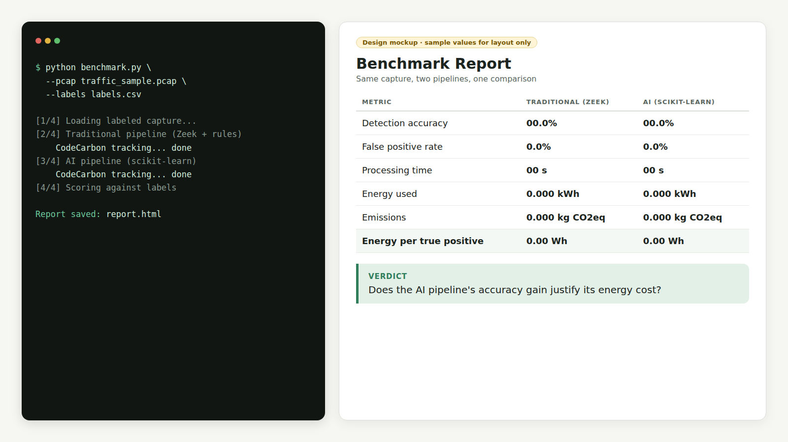
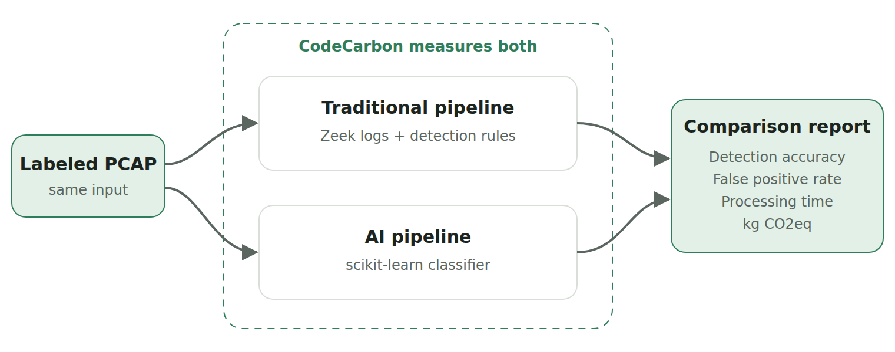
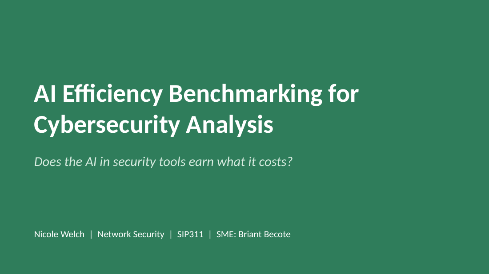
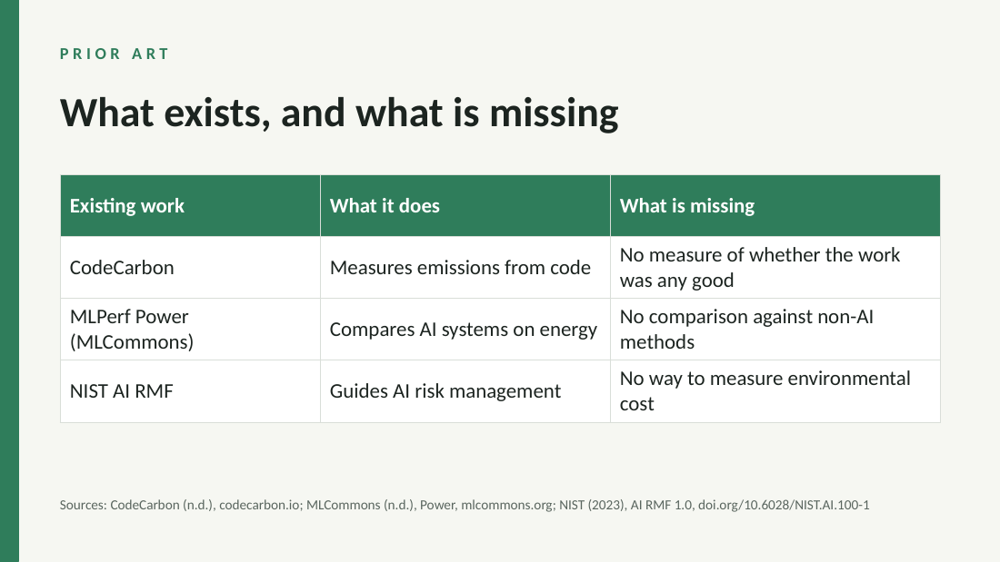

Network Security · University of Advancing Technology
Measuring whether security tools earn what they cost.
I'm Nicole Welch, a Network Security student at UAT working toward SOC analyst and incident response work. Before school I served in the Air Force and did server administration, mostly hardware support and email cloud security. Now I spend most of my time in packet captures, Zeek logs, and Active Directory labs.
About me
I care about technology that justifies itself. A lot of security products are adding AI by default right now, and very few people are asking whether the accuracy gain is worth the energy it burns or the analyst skills it replaces. My Student Innovation Project is built around answering that question with data instead of marketing.
Outside of the technical side, I'm interested in social engineering and digital footprinting, especially how small bits of oversharing add up into something an attacker can use.
Project gallery




Explore
SIP
AI Efficiency Benchmarking for Cybersecurity Analysis: innovation claim, pipeline design, timeline, and code.
View project →Boards
The six Network Security degree objectives from the UAT catalog, which I'll present against in SIP411.
View objectives →Projects
Hands-on labs in network traffic analysis, AD enumeration, firmware analysis, and cloud IAM.
View projects →